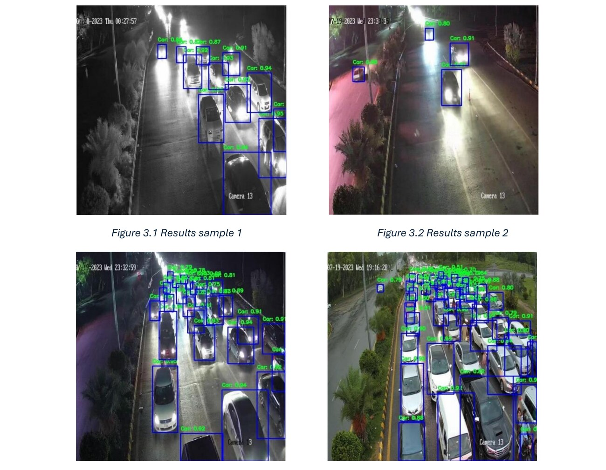
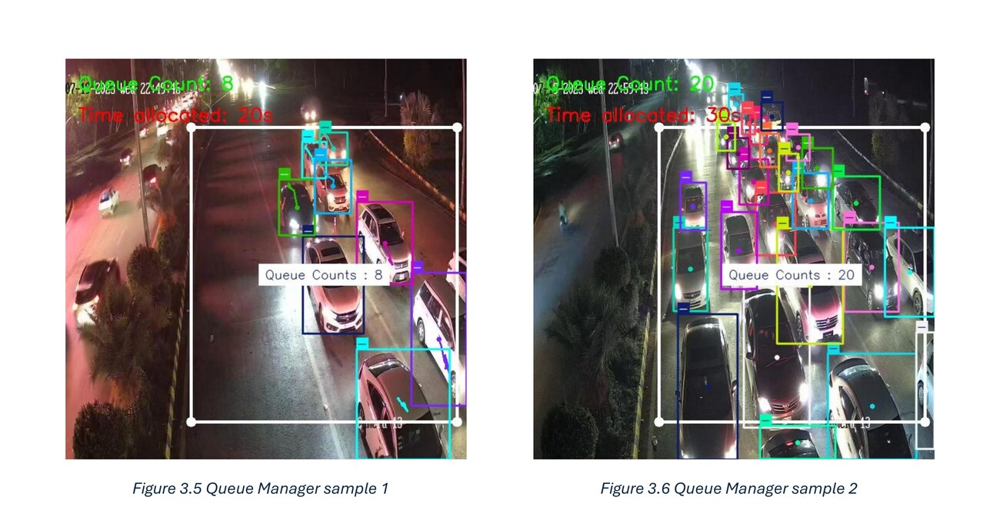
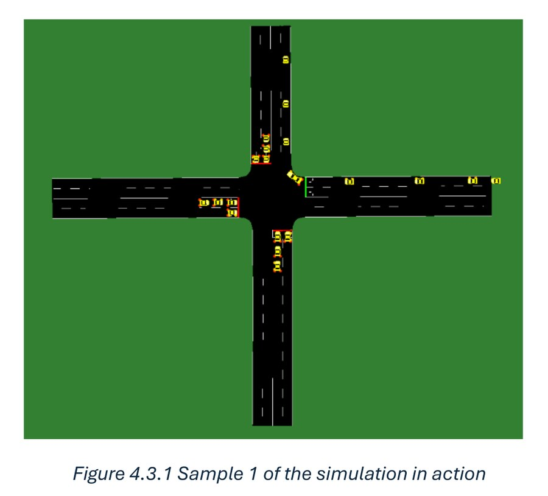

Traffic signal control
Fixed-cycle traffic lights hold a green light for an empty lane while a queue builds beside it. The graduation project replaced the cycle with the thing it should have been reading all along — how many cars are actually waiting.
YOLOv11 detects and counts vehicles inside a bounded region, incrementing on an entry line and decrementing on an exit line. The count maps to a green duration through a rule set. A four-way intersection in SUMO provided the test bed, and a Streamlit interface exposed the dataset, the live predictions, and the simulation.
The metric that mattered
Recall, not accuracy. The baseline detector scored 0.45 recall — it was missing roughly half of all vehicles. In a system that allocates green time by counting cars, every missed detection becomes wrong timing. The trained model reached 0.90 recall and 0.92 precision, mAP@0.5 of 0.96.

The count-to-timing rule is intentionally simple: a queue of 8 vehicles gets 20 seconds of green, a queue of 20 gets 30 — no learned policy, just a rule set driven directly off the detection count.

Simulation only. It was never deployed to a real intersection, and the gap between a SUMO junction and a real one is not small.

What I actually worked on
All four pieces: training and evaluating the detector, the queue-manager and entry/exit counting logic, the four-way SUMO network and traffic scenarios, and the Streamlit interface that ties dataset, live prediction, and simulation together. It's the most end-to-end project in the academic portfolio — data through model through control logic through simulation through interface — though it was built with a team, not solo.
Built with
YOLOv11 · SUMO · Streamlit · Python